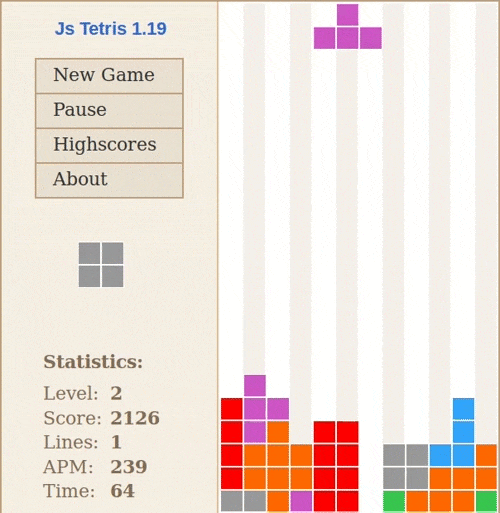

Те́трис — компьютерная игра, первоначально изобретённая и разработанная советским программистом Алексеем Пажитновым.⋆
Тетрис представляет собой головоломку,
построенную на использовании геометрических фигур
«тетрамино» — разновидности полимино,
состоящих из четырёх квадратов.
Игра была выпущена 6 июня 1984 года

В 1984-м программист Алексей Пажитнов
постарался перенести в компьютер загадку «тетрамино».
Головоломка была усовершенствована и запрограммирована на компьютера «Электроника-60».
предварительно «Тетрис» смотрелся очень примитивно: фигурки были из текстовых знаков вроде скобок и черточек.
чуток позднее молодой программист Вадим Герасимов перепишет игру для компьютеров IBM в уже привычном всем виде. «Тетрис»,
ходивший по рукам на дискетах, стал бестселлером среди компьютерщиков в СССР и вскоре вышел в большой свет.
«Тетрис» и его клоны по сей день возможно повстречать в каждом гаджете.
В последующие годы «Тетрис» во множестве различных версий был портирован на великое множество устройств,
включая всевозможные компьютеры и игровые консоли,
а также такие устройства, как графические калькуляторы, мобильные телефоны, медиаплееры, карманные персональные компьютеры и
— в качестве «пасхального яйца» — устройства!
♡⸜(˶ᵔ ᵕ ᵔ˶ )⸝
постарался перенести в компьютер загадку «тетрамино». Головоломка была усовершенствована и запрограммирована на компьютера «Электроника-60».
предварительно «Тетрис» смотрелся очень примитивно: фигурки были из текстовых знаков вроде скобок и черточек.
чуток позднее молодой программист Вадим Герасимов перепишет игру для компьютеров IBM в уже привычном всем виде. «Тетрис»,
ходивший по рукам на дискетах, стал бестселлером среди компьютерщиков в СССР и вскоре вышел в большой свет.
«Тетрис» и его клоны по сей день возможно повстречать в каждом гаджете.
В последующие годы «Тетрис» во множестве различных версий был портирован на великое множество устройств,
включая всевозможные компьютеры и игровые консоли,
а также такие устройства, как графические калькуляторы, мобильные телефоны, медиаплееры, карманные персональные компьютеры и
— в качестве «пасхального яйца» — устройства!